Job description
Technical Lead
Full Stack TypeScript · Remote · 11-month contract
Help governments give every person a legal identity from birth, using open-source software built as a Digital Public Good.
At a glance
- Role
- Technical Lead, Full Stack TypeScript
- Contract
- Independent contractor, 11 months with the possibility of extension
- Hours
- Full-time, 5 days per week
- Location
- Fully remote, with at least 4 hours a day overlapping UK and Central European working hours
- Day rate
- Negotiable depending on experience
- Reports to
- Technical Architect / CTO
- Start date
- 11th January 2027
Who we are
About OpenCRVS
Since 2018, we have been building OpenCRVS: open-source civil registration and vital statistics (CRVS) software that helps governments record births, deaths and other life events. OpenCRVS is a not-for-profit initiative and is recognised as a Digital Public Good.
Without a birth certificate, a child does not exist in the eyes of the law. Around 1 in 4 children under five worldwide are still unregistered, and over 100 countries lack a fully functioning CRVS system. OpenCRVS is designed to change that. It works on mobile, in low-connectivity settings, and is built around the people who use it every day.
We currently support projects in the Philippines, Burkina Faso, Uganda, Somalia and the Pacific Islands. Learn more about our UN Development Partnership, our technical documentation and our code on GitHub.
Why it matters
The role
OpenCRVS is critical government infrastructure. It has to be installed, monitored and maintained in close partnership with ministries, their support teams and their developers. That is where you come in.
As a Technical Lead, you will be a hands-on engineer and a trusted, client-facing leader. You will configure and deploy OpenCRVS, build new features and integrations with our core team, and help local teams run OpenCRVS confidently themselves.
You will join a team of around 10 technical leads & senior developers, part of a 30 strong team of designers, QA testers, business analysts and managers, based across Europe (Paris, London, Helsinki and Lisbon). We will invest in getting you up to speed on OpenCRVS through onboarding and pairing with the core team.
Responsibilities
What you will do
Implement and configure
- Install and configure OpenCRVS to meet each country's birth and death registration requirements, from pilot to national rollout.
- Translate client requirements into technical designs for configuration, new features and integrations.
- Integrate OpenCRVS with other government systems (such as national ID and health systems) through our APIs.
Run reliable infrastructure
- Set up hosting environments, CI/CD pipelines, monitoring and alerting.
- Monitor and maintain the health, security, backups and performance of live OpenCRVS instances.
- Lead level 3 investigation and root cause analysis, and plan safe hotfixes and releases.
Build the product
- Develop and review new OpenCRVS Core features alongside the core team.
- Write well-tested TypeScript, and flag technical debt and architectural risks early.
- Work with our Product Owner to turn field learning into clear product tickets.
Lead, train and support
- Be the trusted technical contact for government clients and their support teams.
- Train and mentor local developers and system integrator partners so they can run OpenCRVS themselves.
- Guide client teams through applying hotfixes and upgrades safely.
A typical week
- Daily stand-up with the whole team
- Feature development, bug fixing and pair programming
- Working directly with client support and development teams
- Code reviews and architecture discussions for new features and integrations
- Estimating upcoming work and flagging technical debt
- Configuring, deploying and testing OpenCRVS installations
- Occasional international travel to partner countries, typically up to 2 trips per year, one to two weeks each.
Experience and skills
What you will bring
Experience
- 5+ years as a senior developer working in TypeScript, including mentoring other developers
- Building and running high-availability, high-traffic products used by real customers in production
- Hands-on DevOps experience: deployments, logging, monitoring, versioning and releases
- Acting as a technical lead or client-facing technical contact for external stakeholders
- Working with sensitive personal data, with a good understanding of security and data protection principles (for example GDPR)
Essential skills
- Expert-level knowledge in Node.js, React and TypeScript, writing well-tested code
- Experience running government or healthcare systems that hold sensitive personal data
- Strong fundamentals in computer science, data structures and software design
- AI assisted development for example using Claude Code
- Kubernetes and Docker
- Continuous integration with GitHub Actions
- E2E testing & unit testing
- PostgreSQL
- Linux server administration and networking fundamentals
- Designing and documenting REST APIs, including authentication (for example OAuth 2.0 / OpenID Connect)
- Agile and Scrum ways of working
Nice to have
- Integrating with national ID, health or other government systems (for example SSO, data exchange layers, MOSIP or DHIS2)
- Maintaining on-premise or private cloud infrastructure, including backups and disaster recovery
- Monitoring for example using ELK stack
- Data analysis platforms such as Metabase, Power BI
- Experience working in low- and middle-income countries or the international development sector
- Working proficiency in other languages such as French, Spanish or Portuguese.
How you work
- Excellent written and spoken English. You can explain complex technical choices clearly to ministers, developers and everyone in between
- Positive and inspiring, with real enthusiasm for code and for mentoring
- Proactive: you reach for pair programming, refactoring and optimisation to keep the codebase clean and robust
- Strong analytical, debugging and troubleshooting skills, especially under pressure
- Curious, empathetic and comfortable in a distributed, international, fully remote team
What we offer
- Work that matters: your code helps people get a legal identity and access to their rights
- Competitive day rates
- Fully remote working with flexible hours around our core overlap
- Travel to partner countries, with travel costs covered under our expenses policy
- Close collaboration with an experienced, friendly team and with UN agencies, governments and partners
- Open-source work in public that you can point to for the rest of your career
Our hiring process
- 1 Application review We read every direct application and reply to all candidates.
- 2 Introductory call 30 minutes to talk about the role, your experience and how we work.
- 3 Technical interview A practical session with two of our technical leads, including a pair-programming or system design exercise. No take-home tests.
- 4 Final conversation Meet our CTO & Technical Architect to talk about client work, leadership and fit.
- 5 References and offer Two professional references, then a contract offer.
How to apply
Email team@opencrvs.org with the subject line "Technical Lead – [Your name]" and include:
- Your CV
- Your GitHub profile, plus links to any open-source work you are proud of
- Your day rate expectation and earliest start date
Good to know
Inclusion
We are building software for everyone, and we want our team to reflect that. We welcome applications from people of all backgrounds, identities and experiences, and we especially encourage candidates from the countries and communities we serve.
Contract and vetting
This is an independent contractor engagement with OpenCRVS LTD UK (a non-profit business). It is not an employment contract. Because you will work with government systems that hold personal data, the successful candidate will be asked to sign a confidentiality agreement and may need to complete a background check.
Your data
We use the information you send us only to assess your application. We keep it for 6 months after the role is filled, then delete it, unless you ask us to keep you in mind for future roles.
Recruitment agencies
We kindly ask third-party recruiters and agencies not to contact us about this role. We only consider direct applications from candidates.